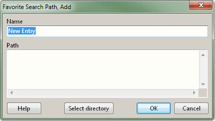
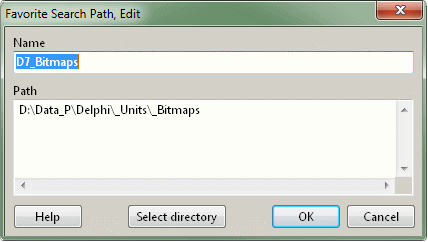

this page .. |
see also .. |
|---|---|
General |
|
|
|
|
Favorites, Add or Edit |
|
Overview |
|
In this dialog you can add or edit the favorite entries:
▪First you have to assign the Name (alias) for a new entry. The length is not limited, but it should be as short and concise as possible to ensure easy retrieval in the popup of the main window. There are also no restrictions on the characters that can be used.
▪Duplicate Name items are currently not rejected directly and are initially displayed in the Favorites window list. When the main window popup is opened or the Favorites window is reopened, the previous alias value is overwritten by the most recently entered entry.
▪The Path control is an editable TMemo; this allows you multi line editing and quickly transfer paths and individual folder names using copy and paste. It's even possible to drop directories on the memo to add them.
▪The Path control can contain multiple directories, so it is e.g. possible to add all directories necessary for Indy, JCL or JVCL with one click rather than having to add each of them separately.
Notice |
▪The ability to edit data without restrictions requires disciplined work, as the accessibility of the paths and the presence of duplicate path information are not checked by the application. This option can be very useful, but you should know exactly what you are doing and whether your path specification references a correct directory under all circumstances. |

